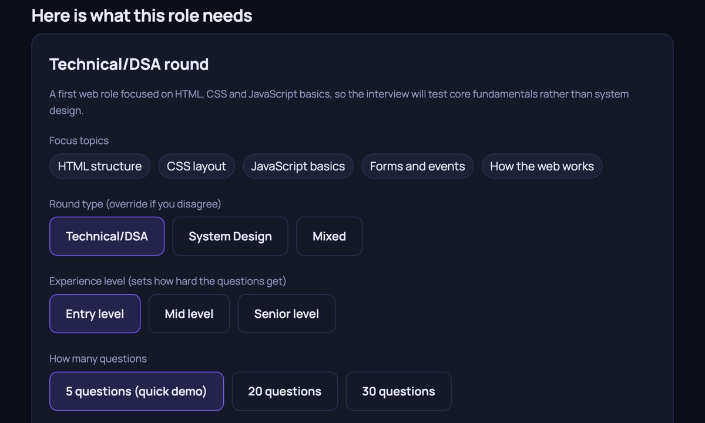
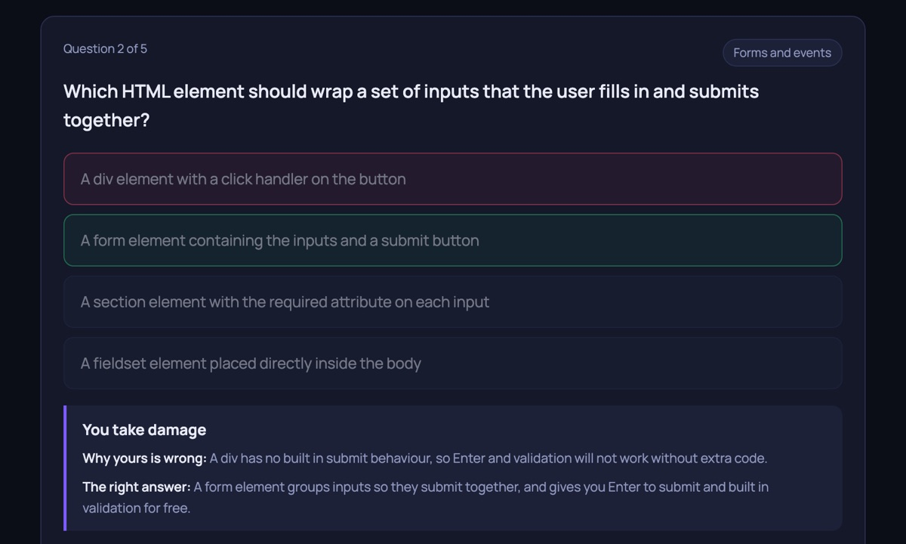
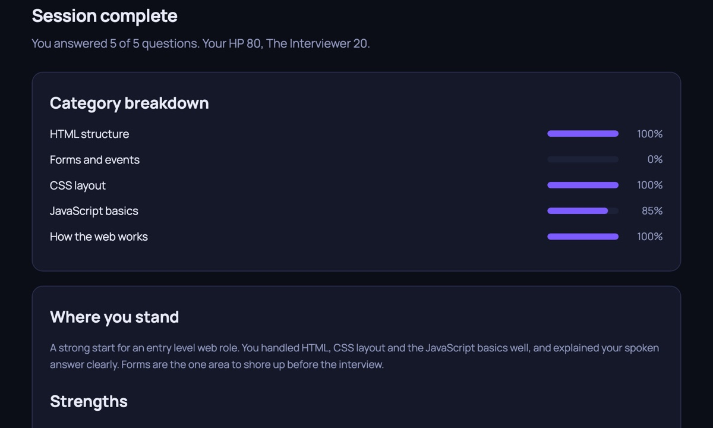

Screens
Captured from the running app against the live Gemini backend.




Paste a job description. Prepwise works out whether the round leans DSA, system design, or both, builds a question set for that role, grades the answers you speak out loud, and closes with a debrief.
A three question sample with the real battle mechanics: correct answers damage The Interviewer, wrong answers damage you and explain why. The questions here are canned. The live app generates them from your job description.
Six steps from a pasted job description to a debrief.
Gemini picks the round type (Technical/DSA, System Design or Mixed), the level (Entry, Mid, Senior) and the key topics. You can override any of it. Non tech roles get a friendly note instead of a wrong track.
20 or 30 questions (or a 5 question demo) in batches of five, climbing a difficulty ladder for the detected level. Each is multiple choice or answered by voice.
Name a company and role, and each batch retrieves the closest reported interview questions from a pgvector question bank and bases one or two questions on them, with a source tag.
Multiple choice scores instantly and explains each wrong option. Spoken answers use the browser's speech recognition, then Gemini scores them 0 to 100 with written feedback. Redo up to twice as practice.
HP bars for you and the boss, category tags, live progress, and a critical hit for a strong spoken answer. A knockout does not end the round, so every question still gets asked.
Readiness summary, a per category breakdown, strengths, focus areas limited to categories you actually scored low in, and one tip for next time.
Captured from the running app against the live Gemini backend.



Plain HTML, CSS and JavaScript on the front, one Supabase Edge Function behind it. No build step to run it.
Browser (index.html, styles.css, app.js)
| { task, input } task = analyze | questions | grade | debrief
v
Supabase Edge Function "gemini" <- holds GEMINI_API_KEY and all four prompts
|-- embeds the request, calls match_bank_questions (pgvector)
v
Google Gemini API -> strict JSON -> parsed and rendered in the browser
Make.com (weekly) -> "bank" Edge Function -> bank_questions table
The most useful lessons came from bugs that did not crash anything.
Gemini 3 models count reasoning against the output limit. A small budget came back empty with no error. Fix: turn thinking off for structured output.
One transient 503 shrank a 20 question session to 5 and looked fine. Fix: retry with backoff, and tell the user when a set comes up short.
The debrief bars never rendered, but every text check passed. Only a screenshot caught it.
Ask for raw JSON, set the response type, strip stray fences, and fall back to extracting the outer block when parsing fails.
The full notes are in docs/learnings.md, and every prompt is in docs/ai-prompts.md.